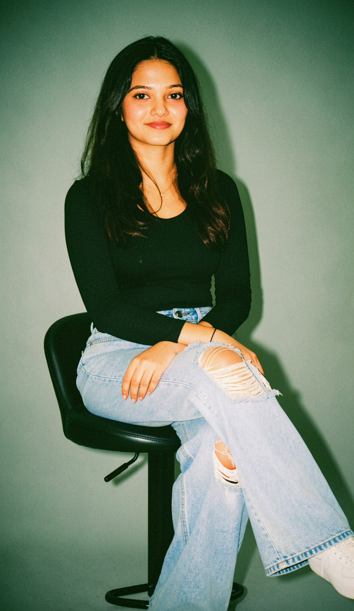

Bachelor of Information Technology graduate — Project Management, Data Analysis & Development. I turn networks, data, and messy requirements into things that actually work.

I'm an Information Technology graduate with a strong foundation in IT support, service desk operations, networking, Python, SQL, frontend development, and emerging AI technologies.
I enjoy troubleshooting technical issues, learning new technologies, and delivering effective solutions that enhance user experiences. My interests span IT Support, System Administration, Networking, Cloud Technologies, Frontend Development, and Artificial Intelligence.
Through my academic projects and professional experience, I've built practical skills in technical troubleshooting, customer support, SQL, Python, C++, HTML, CSS, React, and problem-solving — while strengthening my communication and analytical thinking, both independently and in teams.
Service desk, troubleshooting, system admin.
From database design to full-stack builds.
Interfaces that are clean, responsive, usable.
Coordinating people, process, and emerging tech.
Covering information technology, data science, databases, and AI.
Awarded for achieving above 80 marks across all modules.
QA techniques and methodologies.
English medium; strong foundation in mathematics and analytical thinking.
Broad academic foundation.
Open to opportunities in Project Management, Data Analysis, and Development. Reach out — I reply fast.